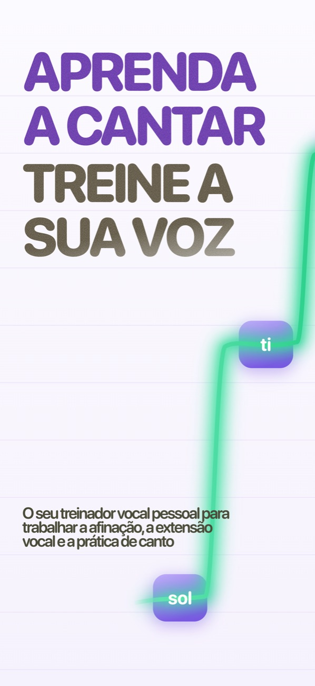
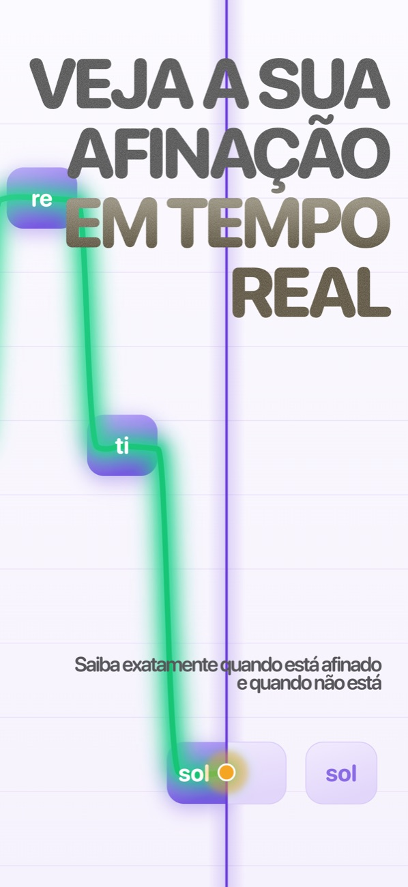
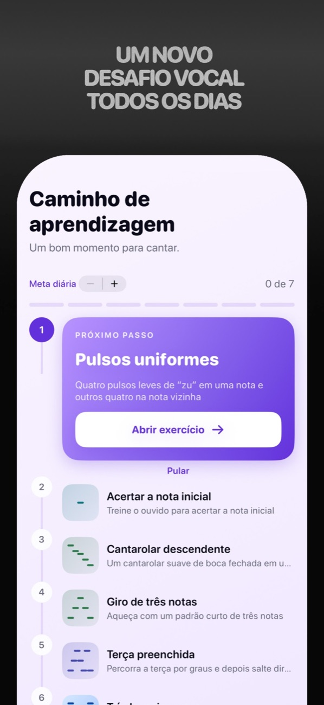
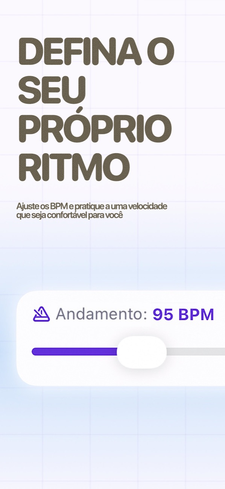

Prática focada
Canu isola o trecho em que você trava, dá notas de entrada e depois deixa você cantar o exercício inteiro de novo.
Canu é o seu treinador vocal pessoal. Aprenda a afinar com segurança, desenvolva a sua voz e cante com mais confiança. Passo a passo.
Canu isola o trecho em que você trava, dá notas de entrada e depois deixa você cantar o exercício inteiro de novo.
Veja qual nota você está cantando e com que segurança a afina.
Meça a sua extensão vocal ao vivo e descubra o seu tipo de voz.
Comece com dois aquecimentos e crie uma rotina com exercícios variados.
Depois de cada exercício, veja o que melhorou e qual trecho praticar em seguida.
Monte escalas e sequências de notas, escolha notas e andamento e salve. O Canu Boogie vem como exemplo pronto para alterar.
Sua semana de prática em uma pauta, com os minutos de cada dia.
Afinação, treino auditivo, agilidade, articulação, controle do ar e mais.
Mude os BPM para desacelerar um exercício difícil ou aumentar o andamento aos poucos.
Escolha a aparência que preferir ou deixe mudar automaticamente.




Sua voz se desenvolve com a prática.
Descreva brevemente o seu pedido. Respondemos o quanto antes e usamos os seus dados apenas para tratar o pedido.
Para podermos ajudar: informe aparelho, versão do iOS, versão do app e uma breve descrição do problema. Uma captura de tela costuma ajudar.
O Canu precisa de acesso ao microfone. Permita em Ajustes do iPhone, em Canu. Pratique em um ambiente silencioso e não cubra o microfone.
O Canu só grava quando você ativa a gravação. As gravações ficam no seu aparelho e você pode apagá-las no app. Ouvir, comparar, salvar e compartilhar fazem parte do Canu Pro.
As compras são feitas pelo seu ID Apple. Na tela Pro do Canu, toque em “Restaurar assinatura”. A assinatura é gerenciada e cancelada nos ajustes do seu ID Apple.
Somente com o seu consentimento: dados de uso vão para o Google Analytics e relatórios de falhas para o Firebase Crashlytics. Cada um é desativado separadamente nos ajustes do Canu, com “Compartilhar dados” e “Compartilhar falhas”. O áudio não é transmitido.
Escolha a região em que você usa o Canu.